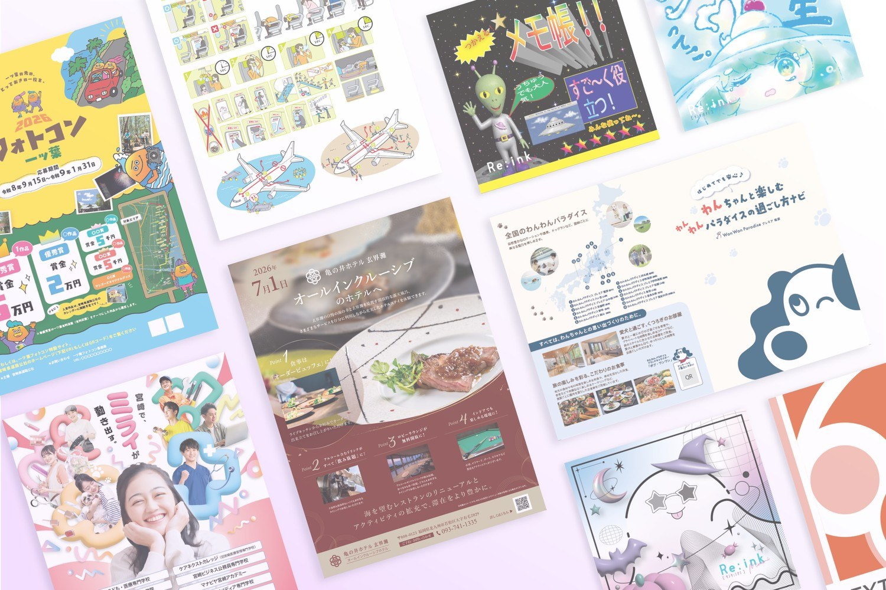
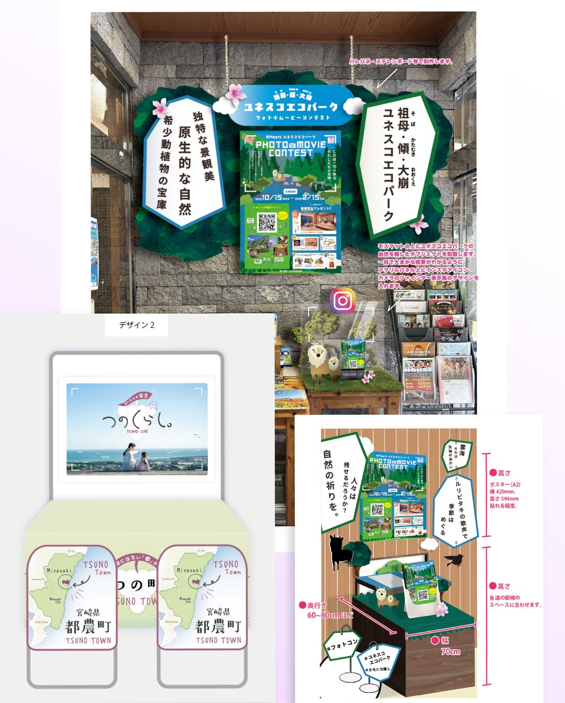

(01) / 02
チラシ・ポスター・パンフレット
チラシやポスター、パンフレットなどの紙媒体のデザインです。遠くからでも目に留まり、手に取ると必要な情報がすぐに分かるよう、見出しと写真のメリハリや情報の順番を整理しています。
← Back(PROJECT No.03) 2026
02ITEMS /
No.03
(CONTENTS)
(03) — 2026
PRINT / BOOTH DESIGN
PRINTチラシ・ポスター・パンフレットなどの紙媒体と、ブースのデザインのまとめです。クライアントの要望はもちろん、情報の順番と余白を整理し、見る人が迷わず受け取れる形に組み立てています。

(01) / 02
チラシ・ポスター・パンフレット
チラシやポスター、パンフレットなどの紙媒体のデザインです。遠くからでも目に留まり、手に取ると必要な情報がすぐに分かるよう、見出しと写真のメリハリや情報の順番を整理しています。

(02) / 02
ブースデザイン
実際に制作したブースのデザイン案になります。離れた場所からでも目を引き、立ち寄った人が自然に内容を受け取れるよう、立体物の配置・色味・見せ方をトータルで考え制作いたしました。